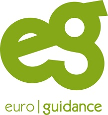
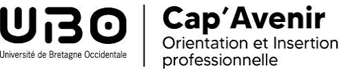
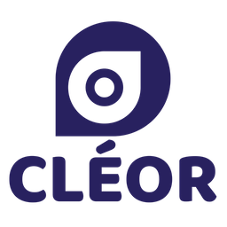
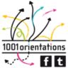

Découverte des formations et procédure d'inscription (Calendrier - Formulation et confirmation des voeux -Phase d'admission)
S'orienter après le bac : toute l'info. Recherche thématique : un métier / une formation / un établissement / un lieu d'information
Etudes - Métiers - Parcours Centres d'intérêt : plus de 2000 vidéos.

S'orienter, étudier et se former en Europe. Etudes - Stages Programme Erasmus +
Université de Bretagne Occidentale : 300 formations : Catalogue en ligne - Vie du campus - International

Cap’Avenir Orientation et insertion professionnelle

Découvrir les métiers à partir de ses compétences, ses centres d'intérêt et des formations.

Conseils, témoignages, vidéos, astuces : retrouve ici des infos sur l'orientation pour les lycéens.
Vers un métier : découvrir un métier, être recruté, se former. Trouver un emploi dans les secteurs qui recrutent.